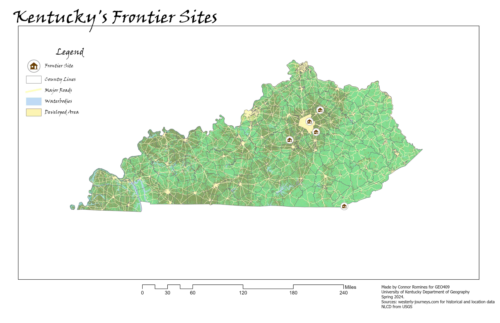
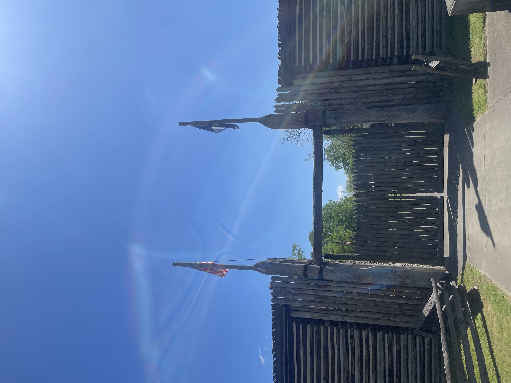

Caption for Cesium slideshow
Fort Boonesborough
Kentucky's First Frontier
The First Men?
Fort Boonesborough State Park, south of Lexington, is home to a historically accurate reconstruction of one of Kentucky's first permanent settlements.
 This project was designed with the intention of showcasing Kentucky's history through mapping. Above is a photo taken of the Fort in May 2024. Below, taken at the same date, shows a reenactor struggling with the stresses of food, water, work, and the ever-present danger of attack.
This project was designed with the intention of showcasing Kentucky's history through mapping. Above is a photo taken of the Fort in May 2024. Below, taken at the same date, shows a reenactor struggling with the stresses of food, water, work, and the ever-present danger of attack.
 Visualizations created from lidar data provided by
KyFromAbove in ArcGIS Pro. Additional sources of information from
Westerly Journeys, April, 2024.
Photographs taken by Connor Romines at Fort Boonesborough State Park, May 2025
Visualizations created from lidar data provided by
KyFromAbove in ArcGIS Pro. Additional sources of information from
Westerly Journeys, April, 2024.
Photographs taken by Connor Romines at Fort Boonesborough State Park, May 2025
Page and visualizations created by Connor Romines for GEO 409, Department of Geography, University of Kentucky. Spring 2024.
Perspective
This map displays the major frontier sites currently known to Anthropologists. Included are Fort Boonesborough, Martin's Station, Bryan Station, Daniel Boone's Cumberland Gap, and Old Fort Harrod. A more detailed pdf can be found using this link: Frontier Sites

A close-up of the visualization above, this map depicts the density of frontier settlements in the Bluegrass region, and provides some perspective as to the modern development in Kentucky. A more detailed pdf can be found using this link: Bluegrass Region
